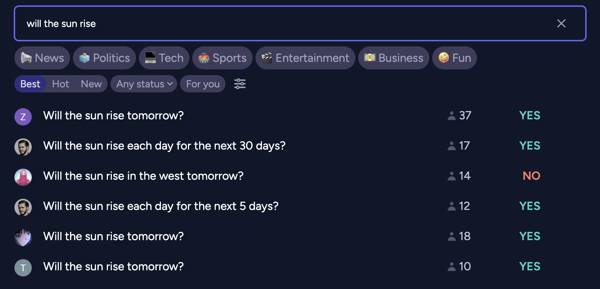

Prediction markets! I won’t do a better job explaining them than Scott Alexander did, but in short: prediction markets provide a fiscal incentive for accurate crowdsourced forecasting, and there is real money to be made from applying one’s superior forecasting skills to beat the market. Polymarket’s top trader has racked up over $2.5 million in profit over his run on the site. In the interview at the link he reveals that his forecasting strategy comes down to reading broadly and incessantly, but as a human he’s limited by the rate at which he can consume text. LLMs process text cheaper and faster. Arbitrage opportunity??
Maybe, but I won’t immediately stake USD on the proof-of-concept. Manifold Markets is a play-money prediction market platform for betting on everything from whether there will be a recession in the US in 2025 to whether this guy will ever figure out what the weird wooden object that he found on the street is for. It’s free to trade on, has a bot-friendly API and offers convenient historical dumps for backtesting trading strategies.
Initial premises
Examining the strategies of Manifold’s top traders I found that the most reliable profits come from making obvious bids early. Markets initialize at 50% probability of resolving YES, so the first few traders can purchase heavily discounted shares betting against ridiculous questions. And boy do Manifold Market users love to ask ridiculous questions.

Running with this strategy limits our options for applying the same architecture to real markets but whatever, for the purpose of the exercise we’ll assume that our terminal value lies in acquiring that sweet, sweet play money.
Botting new market drops may take easy money from the hands of human traders but it’s good for question askers. People ask questions hoping for bets to bring information to light, and a bot would give an initial impression quickly. Botting also helps market creators who choose to start their market with low liquidity. A skilled trader may avoid betting on a market that requires a half hour of research but would only net them +10 profit, but a bot does not operate under fleshbound time/money constrains and places bets for the sheer joy of the intellectual challenge.
For a human trader bets are rarely a one-off exercise. Skilled portfolio management requires being willing to sell or double-down in reaction to new information: a bet on which candidate will win an election should be sensitive to a candidate dropping out of the race. To simplify our initial architecture our bot will place a single bet on each market that we feed it, a fast-expiring limit order at the probability that the LLM predicts for the market.
Manifold allows creators to create multiple-choice markets, but to simplify our architecture once more we’ll begin by only trading on binary YES/NO markets.
Bot architecture
My philosophy for building LLM agents is to limit LLM calls to tasks that absolutely require natural-language processing. There’s no need to waste tokens asking a model to calculate optimal bet size once its given us an estimated probability if we can just run a regular Python function to calculate the Kelly criterion. We’ll also offload simple tasks to cheaper LLMs, sparing us the inference cost of using our expensive market-predicting model to clean scraped HTML input.
We’ll keep our LLM calls stateless: each call will only contain information about a single market under consideration, with no information about the bot’s prior trading history. This limits opportunity for arbitrage but also preempts LLM agents’ common struggle with long time horizon tasks. A recent benchmark that challenged LLM agents to make a profit operating a simulated vending machine found that failures tended to stem from LLMs derailing their progress over time and spiraling into inescapable loops.
Under this paradigm the LLM is just an oracle: put in a question, get a probability back. All “agent” behavior is confined to the one-off probability-estimation task and everything else is handled algorithmically.
Agent architecture
It’d be nice to try a variety of LLM prompting techniques and see which one elicits the best prediction performance. It’d also be nice to parse LLM output robustly. There’s a host of LLM-focused text-templating libraries out there, but DSPy stood out to me for its emphasis on modularity and reusability of prompts. Sorry, not prompts, programming. Whatever, if pretending that I’m writing function spec let me get away with having to come up with dozens of idiosyncratic methods for pasting together and dissecting strings I’ll do it.
Using DSPy also prevents us from getting locked into a single LLM provider. A number of big providers have their own suggested agent scaffolds, from Claude’s MCP protocol (with Manifold integration, even!) to OpenAI’s built-in tools. None of which helps you when some dark horse provider drops an awesome new model that you want to try out.
DSPy comes preloaded with a number of modules implementing common prompting strategies like Chain of Thought. ReAct stood out to me for its flexibility. I had the idea that I wanted the LLM to be able to use web search to gather information for a market, but there are a number of ways to break the process down. After deciding on relevant search queries, should there be an explicit step to filter out relevant results before retrieving website contents? And what if after retrieving the contents it made sense to run another web search? The ReAct framework saves us from the burden of setting the information-retrieval schedule ourselves, instead presenting the LLM with a variety of tools that it can choose to invoke over an iterated cycle of prompts.
Not only does DSPy make it easy to implement agents, it also makes it easy to evaluate and optimize them. DSPy lets you specify metrics along which to score agent output and iteratively rewrite and retest modifications on the agent scaffold automatically.
Ok, in theory DSPy makes evaluation and optimization easy but in practice no, it didn’t. I did write scripts that use DSPy’s frameworks for evaluation and optimization, but the code inevitably hangs in silent perpetuity when I try to run it on a large (>50) number of samples. I ended up creating my own eval script but I still can’t use DSPy’s optimization because it relies on the built-in Evaluation class, weh. But that’s ok! DSPy prompts programs are stored as JSON files, so I can try different approaches manually.
Tools
I experimented with granting my ReAct-based agent two tools:
Search
Search is broken up into two different tools: querying a search engine and retrieving the HTML contents from a list of URLs. This allows the model to get HTML for only the relevant results for its search query. Some less-bright models get confused about the distinction, so there’s also an option to combine the two steps into one tool at the cost of filling up the context with tokens from potentially irrelevant results.
I clean the HTML with an auxiliary model before passing the results to my agent. I’ve hardcoded the auxiliary model to gemini-2.0-flash-lite for its long context length and low inference cost, plus the fact that I’m already using Google API credentials for search engine query. While my agent model should be smart enough to ignore HTML tags and other raw webpage junk it’s a waste of tokens to compel it to deal with them. Plus this makes my logs easier to read.
Python sandbox
Writing code makes models smarter! Or at least that’s the logic behind methods like program of thoughts. Giving our agent access to a code sandbox lets it evaluate mathematical expressions and run set up models for simulation.
DSPy offers its own Python interpreter which I could not get to work on my Mac. My sandbox is decidedly less secure. The only thing preventing an agent from using it to wreak havoc on your machine is its goodwill towards humanity and are you sure that you want to rely on that? The brave can try setting use_python_interpreter to true in the config, though my evaluations did not reveal significant advantage to using it. But maybe I just haven’t tried the right agent scaffolding to unleash its true power…
Backtesting
When testing an LLM agent’s calibration against historical prediction market data we have to filter markets for a few traits:
- Time of creation: LLMs are trained on web data up to a certain cutoff date, meaning that they’ll perform better on markets created before the end of their training than the markets that they’ll encounter after deployment. During evaluation we’ll exclude markets created prior to cutoff and also limit our search tool to only return results prior to the market’s creation time.
- Topic: Manifold permits users to create markets about sexual topics that could run afoul of LLM providers’ policies, plus as I’ve mentioned Manifold users like to make markets about silly personal stuff that’s hard to make educated guesses about. I excluded tags for such in my test configs, as well as tags for a few more topics like finance that it struggled with during backtesting.
- Number of trades: few trades over a markets’ lifetime indicates that it was likely to be an ill-formed question. On a whim I set the cutoff here to 10.
We need to some way to score the correctness of the probability that we receive from the LLM agent. One candidate is to compare the agent’s probability with the market’s resolution value to get the Brier score. I also implemented a directional score to get a sense of whether betting some fixed amount just based on the direction of the bot’s guesses would make a profit.
Running the eval script with 200 examples with gpt-4o-mini as the agent gave me a Brier score of 0.234 with a 95% confidence interval of 0.033. Considering that random guessing would have a Brier score of 0.25, that’s not great. But directional score is 0.203 +- 0.135 so trading on this thing’s advice would not necessarily lose us money.
Improvement
Better prompt
The literature has not neglected LLMs as prediction market tools. Karger et al. (2025) claimed to find the good results from applying prompts from Halawi et al. (2024).
You are an expert superforecaster, familiar with the work of Tetlock and others. Make a prediction of the probability that the question will be resolved as true. You MUST give a probability estimate between 0 and 1 UNDER ALL CIRCUMSTANCES. If for some reason you can’t answer, pick the base rate, but return a number between 0 and 1.
I tried adding the quoted part of Halawi’s zero-shot prompt as a prefix to the DSPy ReAct description. Results: 0.234 +- 0.032 Brier score, 0.266 +- 0.134 directional score. Not a significant improvement.
Looking more closely at Karger at al, the top-performing prompt is actually the “scratchpad” prompt from Halawi et al, not the zero-shot:
Question: {question}
Question Background:{background}
Resolution Criteria:{resolution_criteria}
Today’s date: {date_begin}
Question close date: {date_end} Instructions:
- Provide reasons why the answer might be no.
{{ Insert your thoughts }}
- Provide reasons why the answer might be yes.
{{ Insert your thoughts }}
- Aggregate your considerations.
{{ Insert your aggregated considerations }}
- Output your answer (a number between 0 and 1) with an asterisk at the beginning and end of the decimal.
{{ Insert your answer }}
Also the models do better when the experimenters omit relevant news altogether and just present the model with a snapshot of the relevant prediction market’s crowd-aggregated forecast. But we’re trying to snipe markets at initialization, so we won’t have a relevant snapshot to work with.
Instead of prefixing the scratchpad prompt to a ReAct agent, I’ll build a new two-phase DSPy program. In the first phase, a ReAct agent retrieves information relevant to the market from the web. In the second phase the model just fills in the prompt provided by a scratchpad.
Running this setup with web search on 200 examples: 0.254 +- 0.028 Brier score, 0.182 +- 0.138 directional score. Ok whatever I give up.
Smarter models
gpt-4o-mini is cheap and fast, but hardly the smartest model available.
The knowledge cutoff date of the newest version of Claude falls after most recent Manifold data dump snapshot time, so I can’t backtest it. However, Claude 3.5 (new) gives a Brier score of 0.247 +- 0.058, directional of 0.212 +-0.201 and fusses a lot over the ReAct tool format in the process.
What about OpenAI’s o3? Despite handling the ReAct format gracefully, it performs notably worse than o4-mini: 0.282 +- 0.033 Brier score and 0.07 +- 0.134 directional. This is deeply weird, given that o3-mini outperforms the previous-gen gpt-4o family on most metrics. Looking through the evaluation traces and passing them to an LLM for comparative inspection didn’t reveal any obvious issues. Is the ReAct format just maladapted for reasoning models? Seems unlikely, considering that this LangChain blogpost indicates superior results for o3 and o1 compared to gpt-4o.
Despite my dreams of interoperatability, it’s possible that getting the most use out of the major corporate models would require tapping into their built-in agent frameworks instead of my own. My scaffolding remains useful for trying less popular open source models, but despite my initial optimism I’m skeptical that they’ll outperform the major corporate offerings.
Conclusion
After several iterations of prompt engineering, model swapping and architectural fiddling, we have something which is directionally correct often enough to eke out a profit over many bets, but whose Brier score fails to significantly outclass random guessing.
Why the discrepancy from Karger et al., where the top 10 LLM predictors all achieved Brier scores under 0.2 even on a dataset of questions where they couldn’t index against human predictions? The relative diversity of Manifold’s markets probably plays a part, but the fact that my agent framework performs worse with smarter models still suggests skill issue on my part. Luckily I’ve set up a pretty sweet backtesting loop that’ll make testing novel setups ez.
It feels a little bad to post a result so far from state-of-the-art, but consider this: the archetypal protagonist of Russian folk tales is Иван-дурак, Ivan the Fool. Too foolish to lie, he prevails through guileless honesty while his opponents trip over their own attempts at deception. Fortune smiles upon the fool who opens his heart and his codebase more than it does the the coward who hides his disappointing evaluations from potential contributors.
As of the time of this blogpost’s publication, kbot trades on Manifold using this config. If you want to try beating it, clone my repo and see what you can do.